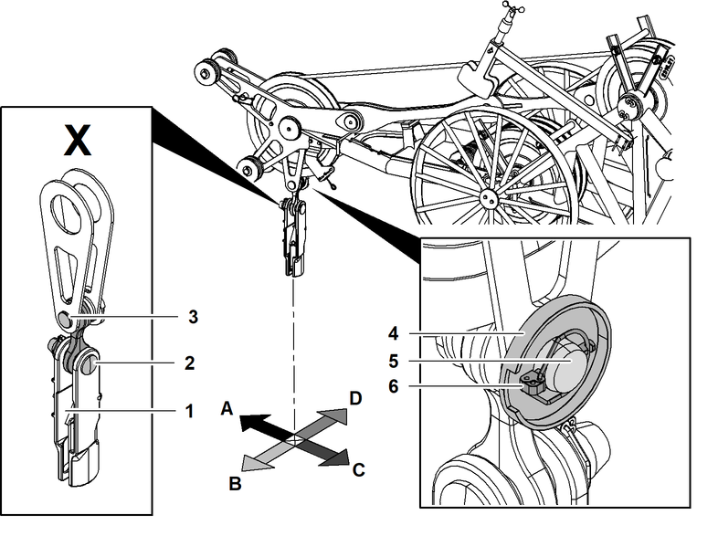

Komponenten des Seilfixpunkts am Spitzenausleger auf Nadelausleger-Kopf montieren

GEFAHR
Unsachgemäßer Einbau des Bolzens und des Taschenschlosses!
Lastabriss.
Bolzen und Taschenschloss laut Vorgaben einbauen. |
Der Bund der Bolzen und die Taschenschloss-Öffnung sind ausschlaggebend für die Einbaurichtung des Seilfixpunkts.

Fig. 5568: Einbaurichtung der einbaurelevanten Komponenten des Seilfixpunkts bestimmen - Spitzenausleger auf Nadelausleger-Kopf
Fig. 5568: Einbaurichtung der einbaurelevanten Komponenten des Seilfixpunkts bestimmen - Spitzenausleger auf Nadelausleger-Kopf
Taschenschloss-Öffnung | |
Bund des Bolzens am Taschenschloss | |
Bund des Bolzens am Nadelausleger-Kopf | |
Scheibe für Klappstecker | |
Bolzen am Nadelausleger-Kopf | |
Klappstecker | |
Richtung Nadelausleger-Kopf | |
Außen | |
Richtung Grundgerät | |
Innen | |
Einbaurelevante Komponenten |
Einbaurichtung der einbaurelevanten Komponenten des Seilfixpunkts | |||
|---|---|---|---|
Bund des Bolzens am Nadelausleger-Kopf | Bund des Bolzens am Taschenschloss | Taschenschloss-Öffnung | |
Alle Seilfixpunkte | B | C | B |
Einbaurichtung der einbaurelevanten Komponenten des Seilfixpunkts

WARNUNG
Unsachgemäßer Einbau von Wirbeln!
Schwere Verletzungen, Beschädigung der Maschine.
Drehungsfreies Seil verwenden. |
Wirbel mit Blockiervorrichtung sperren. |

GEFAHR
Unvollständige Sicherung der Bolzen!
Lastabriss.
Sicherstellen, dass Bolzen laut Vorgaben vollständig gesichert sind. |
Kreuzlasche mit Nadelausleger-Kopf verbolzen. |
Sicherstellen, dass Klappstecker 5 mit Scheiben 2 + 3 + 4 den Bolzen 1 vollständig sichert. |
Taschenschloss mit Kreuzlasche verbolzen. |
Sicherstellen, dass Klappstecker 6 den Bolzen 7 vollständig sichert. |

Sicherungsknopf 2 drücken. |
Sicherungslasche 1 nach unten bewegen und halten. |

Seilende 2 in Taschenschloss einführen. |

GEFAHR
Unvollständige Sicherung des Seilendes!
Lastabriss.
Sicherstellen, dass Sicherungslasche einrastet. |
Sicherungslasche 1 loslassen. |
Sicherungslasche 1 rastet ein. |